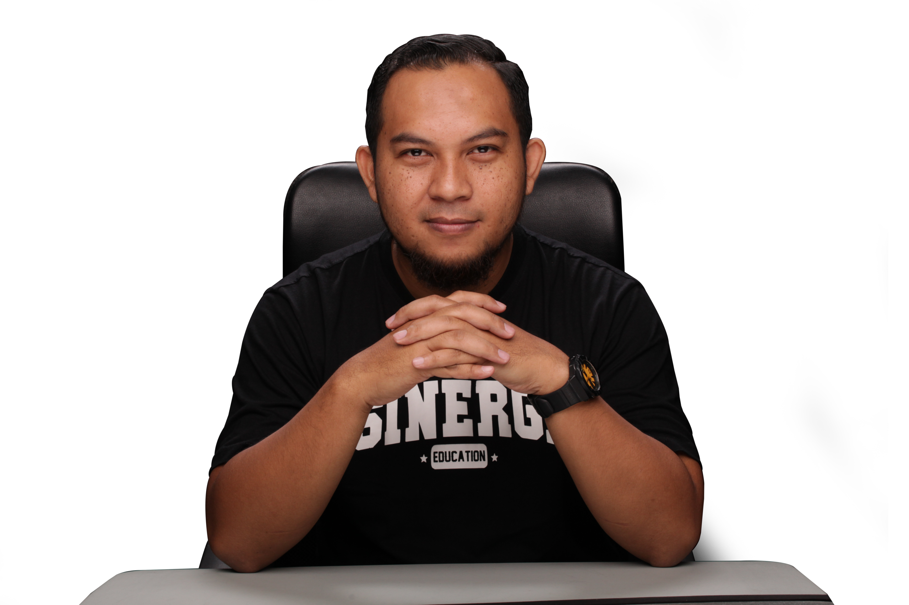

Sinergi Business Solution
Mendampingi potensi menjadi kemajuan.
Sejak 2006, Sinergi Business Solution mendampingi pengembangan perusahaan, bisnis, entrepreneurship, leadership, dan personal development. Pengalaman kami mencakup seminar, workshop, training, serta coaching bagi peserta dari berbagai instansi, perusahaan, dan UMKM.
Lebih dari 100.000 peserta telah mengikuti kegiatan bersama kami. Dalam setiap proses, kami menggabungkan training, coaching, consulting, dan mentoring agar pendekatan dapat disesuaikan dengan kebutuhan nyata klien.
Kenali layanan kami